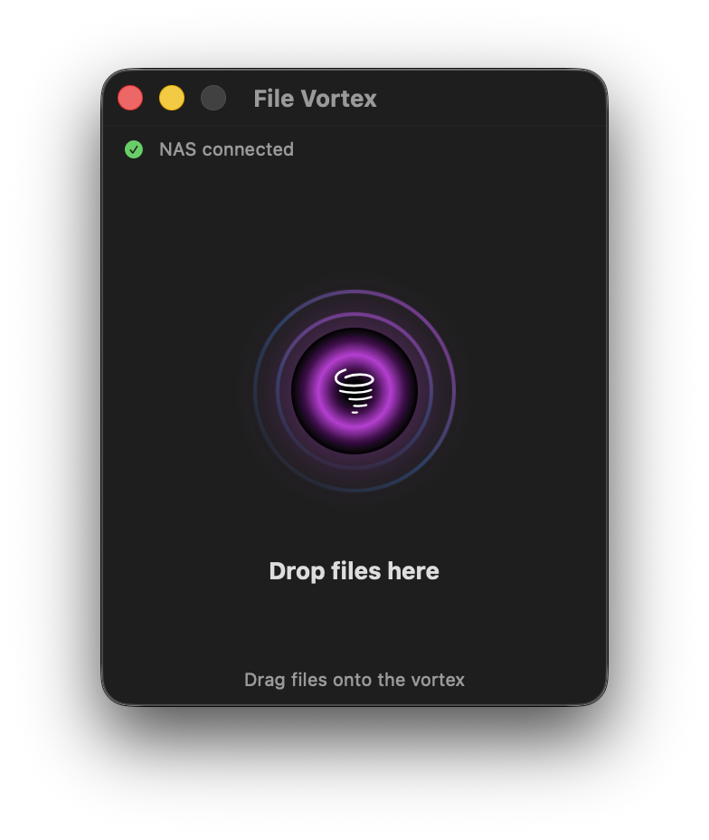
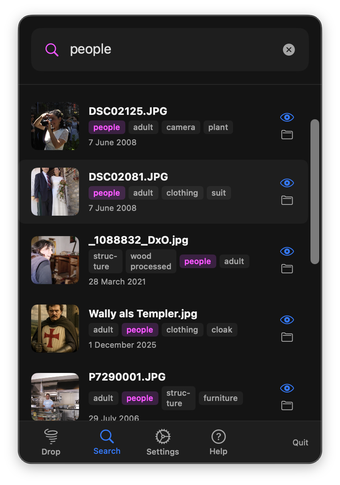
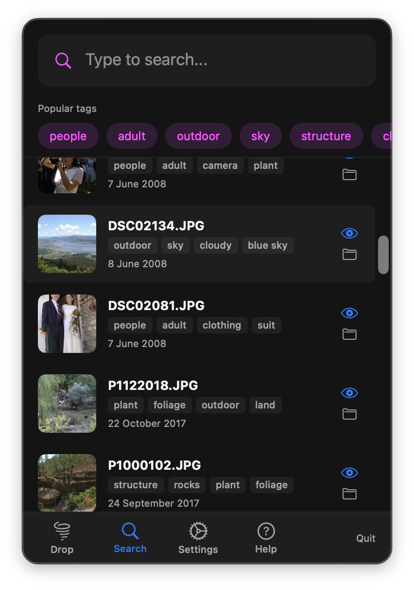
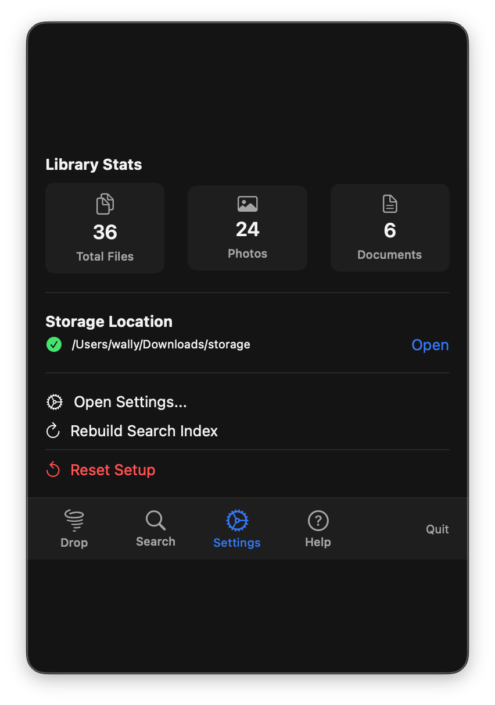
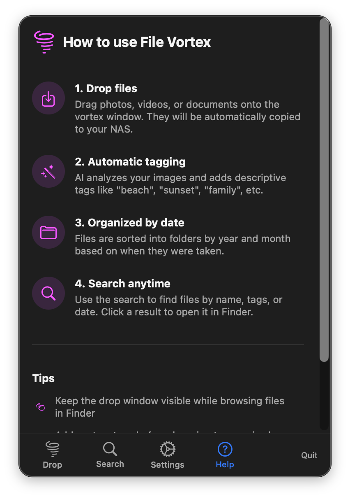

Screenshots
Sehen Sie File Vortex in Aktion

Drag & Drop Vortex
Das schwebende Drop-Fenster mit animiertem Vortex und Live-NAS-Verbindungsstatus.

KI-gestützte Suche
Suchen Sie nach "Menschen" und finden Sie alle Fotos mit Gesichtern. KI-Tags werden in den Ergebnissen hervorgehoben.

Beliebte Tags
Durchsuchen Sie Ihre Bibliothek nach beliebten Tags. Miniaturansichten und KI-generierte Tags auf einen Blick.

Intelligente Tag-Suche
Suchen Sie nach jedem Tag wie "outdoor", um Ihre gesamte Bibliothek sofort zu filtern.

Bibliotheksstatistik
Sehen Sie Ihre Bibliothek auf einen Blick mit Dateianzahl, Speicherort und Schnellaktionen.

Integrierte Hilfe
Schritt-für-Schritt-Anleitungen direkt in der App. Einfach zu bedienen vom ersten Tag an.